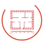
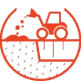

SOLUÇÕES
LEVANTAMENTO TOPOGRÁFICO
Levantamentos Planimétricos, Perimétricos e Planialtimétricos, atendendo diversas finalidades, desde regularizações cartoriais e judiciais à projetos de infraestrutura, engenharia e arquitetura.

AEROFOTOGRAMETRIA COM DRONES
Execução de Mapeamento aéreo que possibilita mensurações precisas através dos produtos gerados, tais como, MDT, MDS, Ortomosaico, Nuvem de Pontos, etc.
AS BUILT – CADASTRAL ARQUITETÔNICO
Levantamento da situação atual de edificações e elaboração de produtos, planta baixa, cortes e fachadas.
REGULARIZAÇÃO DE IMÓVEIS
Montagem de peças técnicas para atendimento de processos judiciais e administrativos, Retificação de Registro, Usucapião, Unificação/Desdobro de lotes, dentre outros.
CÁLCULO DE VOLUMETRIA
Execução conjunta de trabalhos em campo e escritório, possibilitando a geração de superfícies e comparação entre elas, sendo possível calcular o volume do solo ou material de interesse.
DEMARCAÇÃO
Demarcações de pontos de interesse, tais como, divisas de imóveis, sistema viário, sondagem, etc.